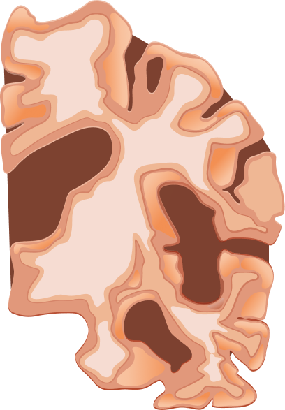
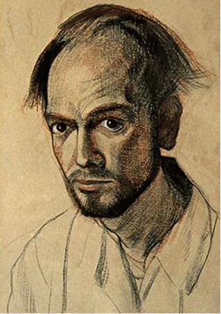
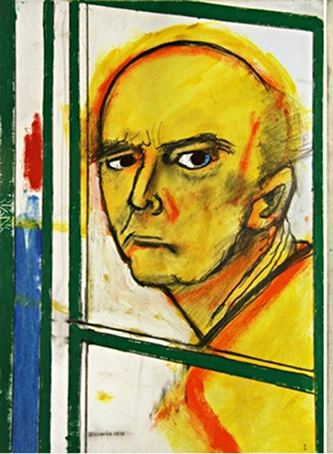
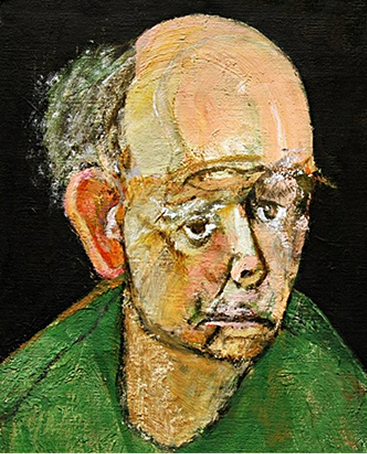
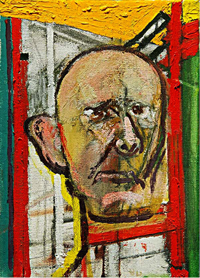
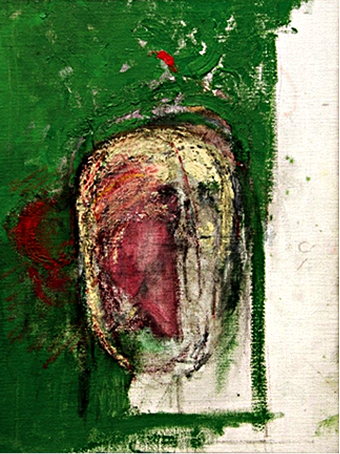
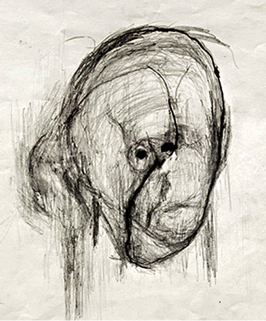

В 1995 году американский художник Уильям Утермолен (William Utermohlen) узнал,
что у него болезнь Альцгеймера
и начал большой проект- серию автопортретов.
Уильям хотел запечатлеть,
как изменяется сознание человека при прогрессирующей деменции
ЗДОРОВЫЙ
МОЗГ
БОЛЕЗНЬ
АЛЬЦГЕЙМЕРА






